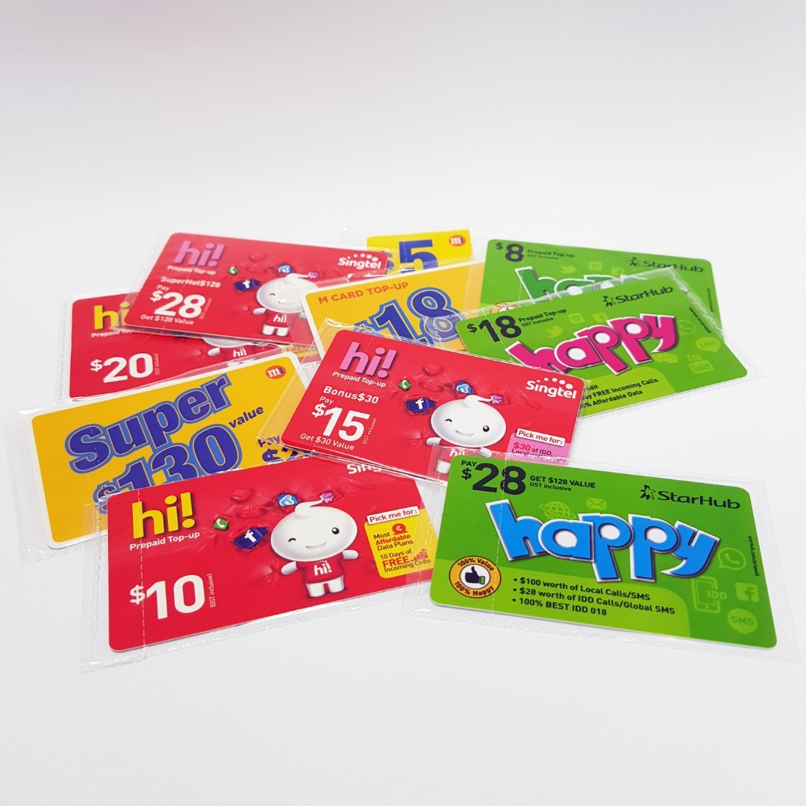
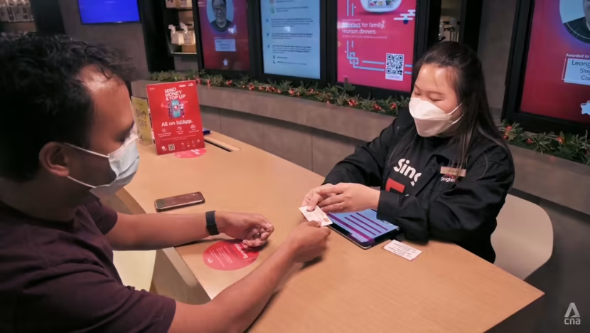
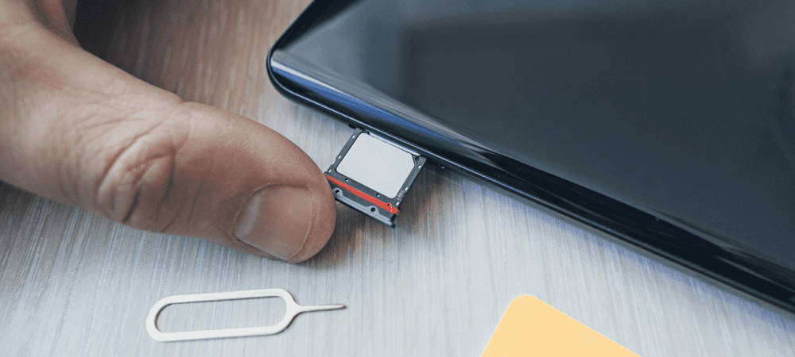
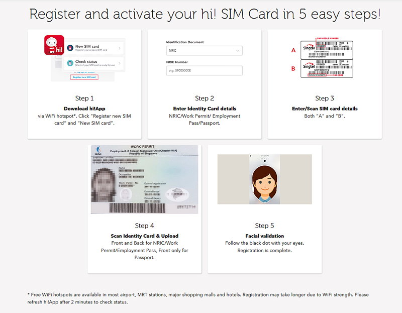

Sim card
Are you planning a trip to Singapore and wondering how to stay connected while you're there? A SIM card is a convenient and cost-effective option for staying connected to the internet and making calls during your travels. Here's a step-by-step guide to help you purchase and activate a SIM card for your trip to Singapore:
Choose a telecom provider
There are several telecom providers in Singapore such as Singtel, Starhub, and M1. Research the different providers and their plans to choose the one that best suits your needs.
Purchase the SIM card
You can purchase a SIM card at any convenience store or telecom provider's store in Singapore. Make sure to bring your passport as you will need it to register for the SIM card.
Register the SIM card
After purchasing the SIM card, you will need to register it. This is a mandatory process in Singapore, and failure to register your SIM card may result in it being deactivated. To register, simply follow the instructions provided with your SIM card or ask the salesperson for assistance.
Insert the SIM card
Once your SIM card is registered, insert it into your phone. If you have any issues inserting the SIM card, refer to your phone's user manual.
Top up your balance
To make calls and use data, you will need to top up your balance. You can do this by purchasing top-up cards at convenience stores or online. Alternatively, you can set up auto top-up with your telecom provider.
Activate the SIM card
To activate your SIM card, dial the activation code provided with your SIM card or follow the instructions provided by your telecom provider. Once your SIM card is activated, you should be able to make calls and use data.
That's it! With your newly activated SIM card, you can now stay connected and enjoy your travels in Singapore without worrying about losing touch with your loved ones or missing out on important updates.
Prices
The cost of a SIM card in Singapore can vary depending on the telecom provider and the plan you choose. Generally, prepaid SIM cards are more cost-effective for travelers as you can control your usage and top up as needed. The prices for a basic prepaid SIM card in Singapore can range from SGD 8 to SGD 15 (approximately USD 6 to USD 11). This includes a certain amount of data, calls, and SMS. You can also purchase add-ons such as additional data or international roaming packages, which may come at an additional cost. It's important to note that some telecom providers may offer special promotions or discounts for tourists, so it's worth checking their websites or visiting their stores to inquire about any ongoing offers. Overall, purchasing a SIM card in Singapore is a convenient and affordable way to stay connected during your travels. Just make sure to research the different options available and choose the one that best suits your needs and budget.